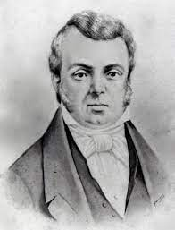

1840
Com a “Lei para Inglês ver”, o comércio de escravizados se tornou ilegal, e grande parte da arrecadação das alfândegas parou de entrar em caixa pro governo. O país aliado que mais exportava para o Brasil era o Reino Unido, que tinha uma taxa a pagar muito menor do que os outros países. Dessa forma, a Tarifa Alves Branco surgiu para aumentar a taxa dos produtos ingleses, e aumentar novamente o balanço comercial, tornando-o favorável. A consequência foi a Bill Aberdeen como forma de retaliação, onde o Reino Unido abatia navios brasileiros que tinham suspeita de portarem escravos.
